List of Interactive Infographic MicroSims
Interactive Micro Simulations to help students learn interactive infographic design fundamentals.
-
Assess the accessibility compliance of a sample MicroSim by evaluating it against a structured checklist covering alt text, semantic HTML, ARIA attributes, keyboard navigation, and more.
-
Advanced Interaction Pattern Showcase
Compare four advanced interaction patterns by experiencing each pattern applied to the same dataset about how a bill becomes a law.
-
AI Image Generation Prompt Builder
Construct effective text-to-image prompts by selecting components from structured categories and observing how each component affects the assembled prompt.
-

An infographic MicroSim of the AI Flywheel causal loop.
-
Assess the quality of an AI-generated MicroSim by reviewing its content, functionality, and pedagogical alignment using a structured review checklist.
-
AI-Assisted Workflow Evolution Timeline
Examine the evolution of AI-assisted infographic creation from early template-based tools through current LLM-powered generation to projected future capabilities.
-

Overlay-style MicroSim spotlighting six core organelles with hover callouts, AP tips, and a quiz mode for quick recall checks.
-
Audience Adaptation Comparison
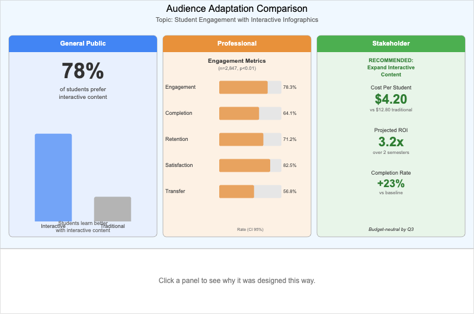
Interactive comparison showing how the same student engagement data is presented differently for general public, professional, and stakeholder audiences.
-
Biogeochemical Cycles Dashboard
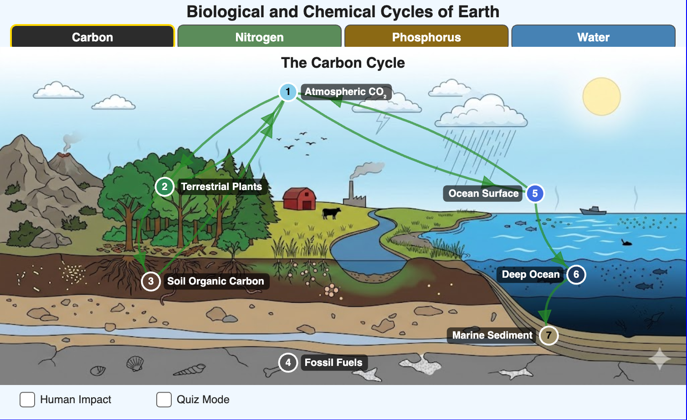
Tabbed dashboard that overlays the carbon, nitrogen, phosphorus, and water cycles on one cross-sectional landscape.
-
Bloom's Taxonomy MicroSim Matcher
Differentiate between the six Bloom's Taxonomy levels by matching learning objectives to the correct level and selecting the most appropriate MicroSim interaction pattern.
-
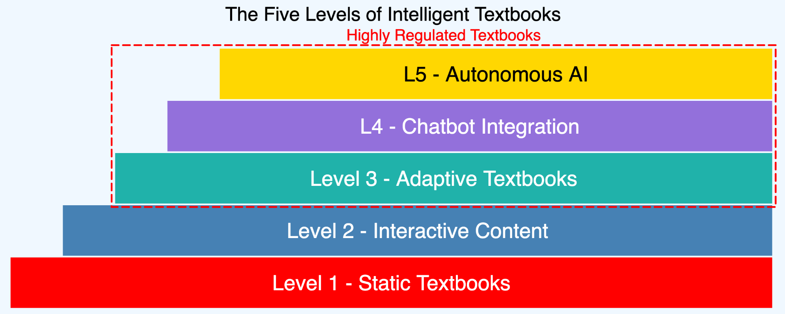
Interactive tool showing the five levels of intelligent textbooks, from static PDF to fully adaptive AI-driven content.
-

Five-stage walkthrough of alcoholic fermentation that pairs brewery equipment cutaways with molecular-scale reactions.
-
Interactive MicroSim comparing Canvas (raster) and SVG (vector) rendering models across four stages — drawing, scaling, interaction, and performance.
-
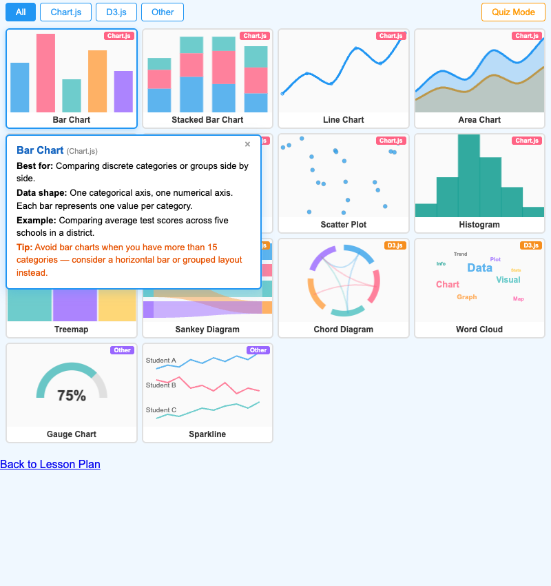
Interactive gallery of 14 chart types with click-to-reveal details and quiz mode, helping learners identify which chart type best communicates different data characteristics.
-
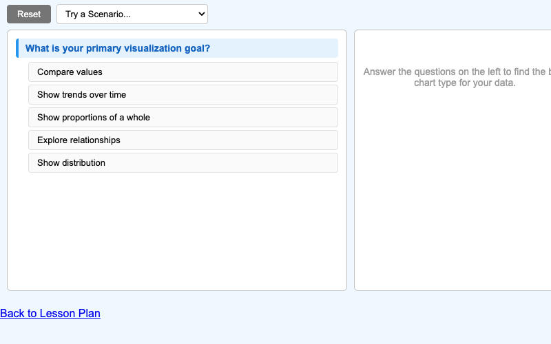
Interactive decision tree that guides learners through questions about their data characteristics and visualization goals to recommend the best chart type.
-
Describe the continuous deployment pipeline for an intelligent textbook by tracing the flow from content change through Git commit, GitHub Actions build, and GitHub Pages deployment.
-
Explain the three building blocks of a causal loop diagram (variables, causal links, polarity indicators) by interacting with each element and observing how they combine.
-
Cognitive Load Balance Explorer
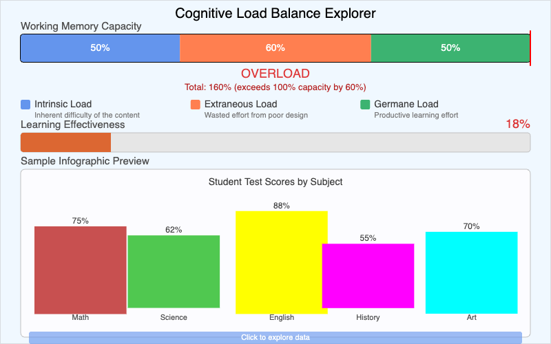
Interactive visualization showing how three types of cognitive load (intrinsic, extraneous, germane) compete for limited working memory capacity.
-

Interactive MicroSim comparing vertebrate forelimb homology across five species, with bone highlighting and a classification quiz.
-
Describe the five stages of the concept-to-MicroSim AI-assisted workflow and explain what happens at each stage.
-
Use pixel and relative coordinate systems to place elements on a canvas, converting between both systems in real time.
-
Design Patterns in Infographic Architecture
Interactive exploration of design patterns used in infographic architecture.
-
Design Principles Synthesis Dashboard
Interactive dashboard synthesizing key design principles for infographic creation.
-
Interactive guide to browser developer tools for inspecting and debugging MicroSims.
-
Interactive tool for selecting the right diagram type based on your data and communication goals.
-
Design an educational dashboard layout by selecting chart types, arranging them in a grid, and configuring each chart's data source.
-
Interactive Chart.js dashboard for visualizing engagement metrics across educational content.
-
Interactive Mermaid diagram explaining how events are detected, mapped to interactive regions, and used to refresh the display.
-
Event Logging Flow Visualization
Interactive visualization of the event logging flow in MicroSim applications.
-
Interactive pipeline for deciding which JavaScript framework to use for a given MicroSim.
-
Gestalt Principles Interactive Playground
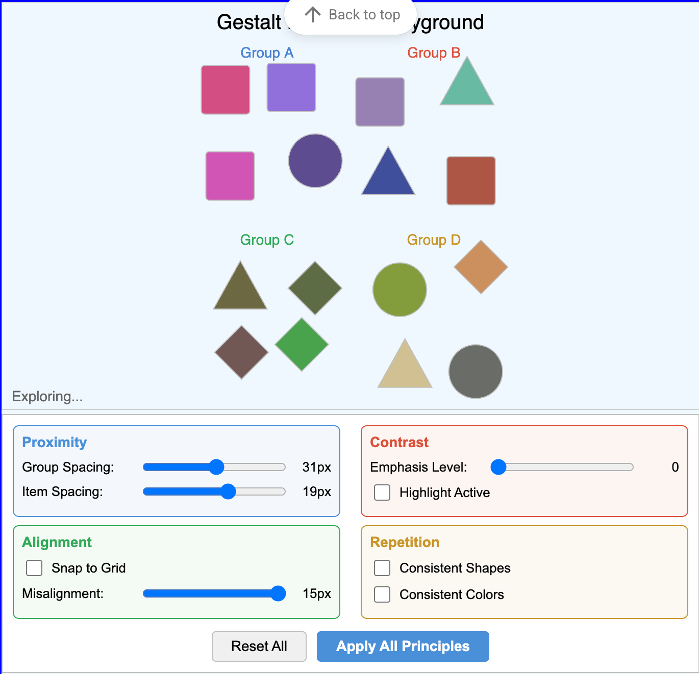
Apply the four Gestalt principles (proximity, contrast, alignment, repetition) to visual elements by adjusting design parameters.
-
Interactive playground for experimenting with hit detection techniques in canvas-based MicroSims.
-
Interactive exploration of iframe security features including sandboxing, CSP, and cross-origin policies.
-
Infobox Positioning Comparison
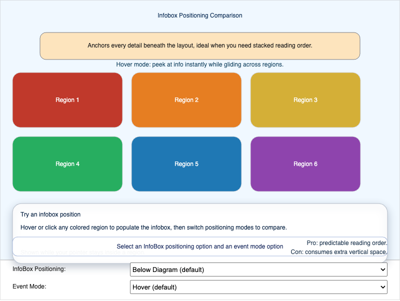
Compare below, side panel, and floating tooltip infobox strategies with hover or click triggers.
-
Infographic Design Principles Workflow
Interactive workflow showing how design principles are applied throughout the infographic creation process.
-
Infographic Development Workflow
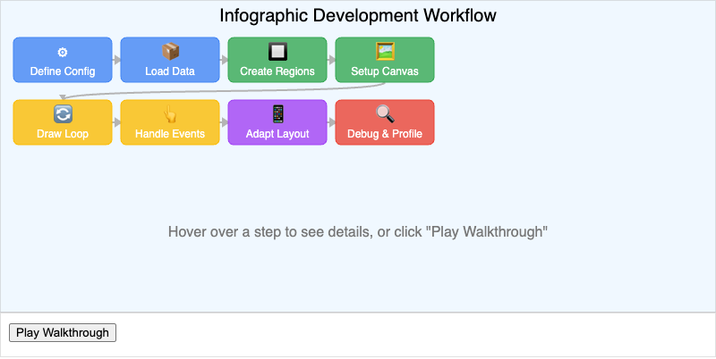
Interactive visualization of the end-to-end infographic development workflow.
-
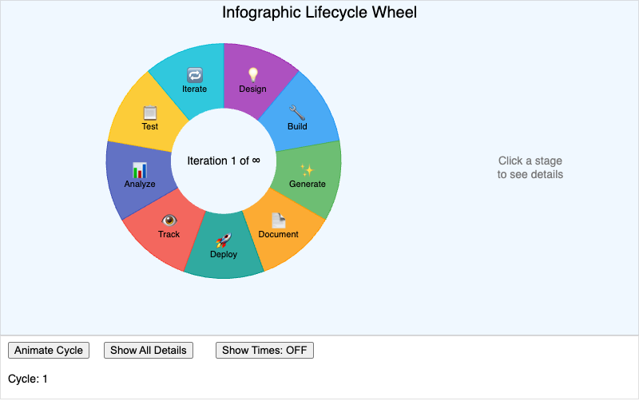
Interactive wheel showing the phases of an infographic's lifecycle from concept to deployment and iteration.
-
Infographic Type Decision Tree
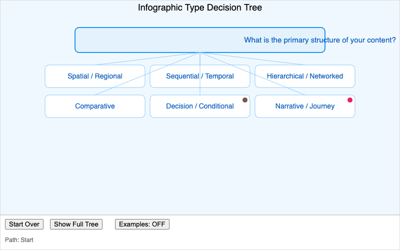
Interactive decision tree for choosing the right infographic type based on content and audience.
-
Interaction Feedback Patterns Demo
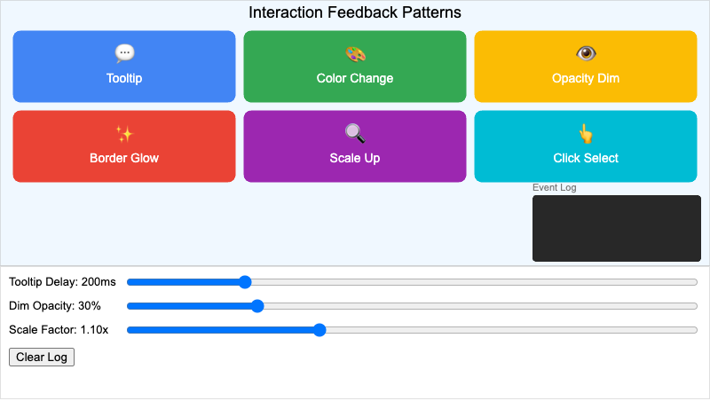
Interactive demonstration of feedback patterns including hover effects, click responses, and drag interactions.
-
Construct a causal loop diagram by placing variables, drawing causal links with polarity indicators, and identifying the resulting loop types.
-
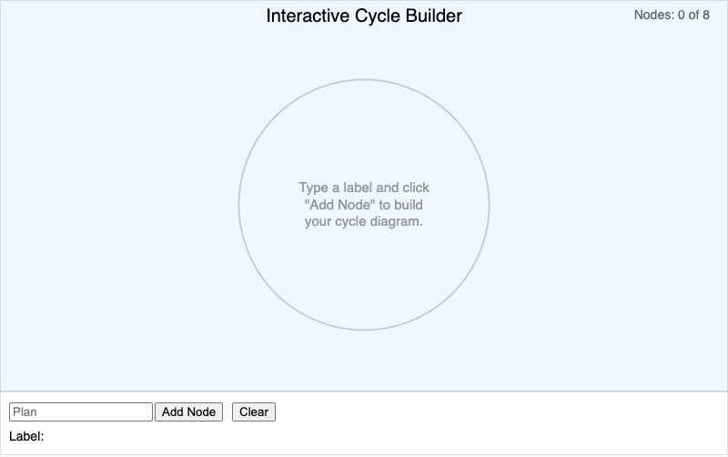
Build and explore cyclical process diagrams by adding stages and defining relationships between them.
-
Interactive Infographic Taxonomy Tree
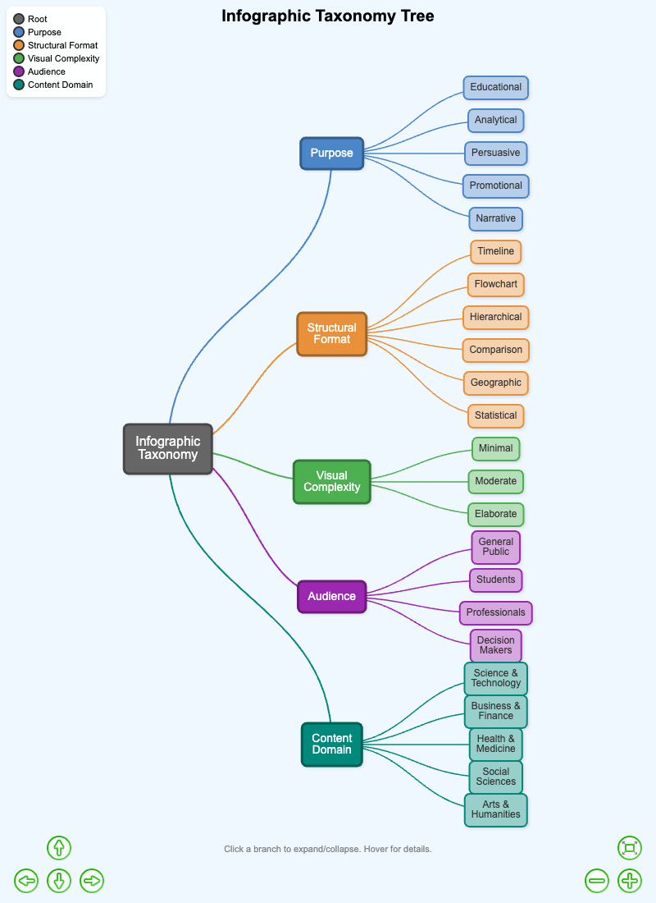
Interactive hierarchical tree showing the five dimensions used to classify interactive infographics, with expandable branches and floating info panels.
-
Interactive Learning Graph Explorer
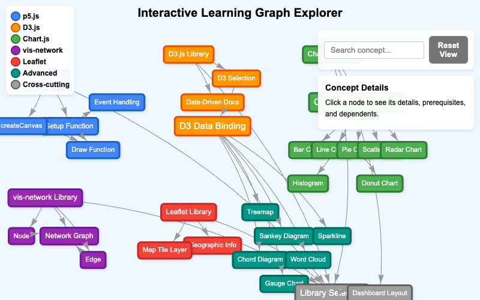
Interactive vis-network explorer for navigating the course learning graph.
-
JavaScript Modern Syntax Playground
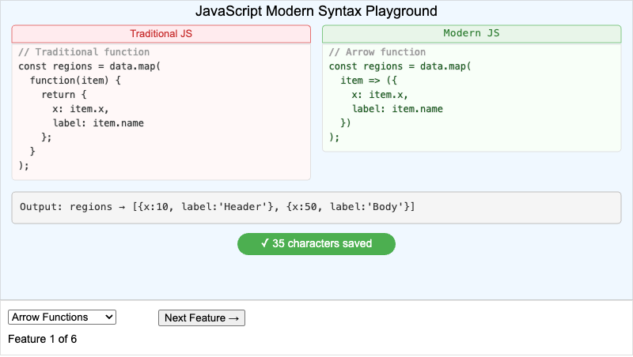
Interactive playground for experimenting with modern JavaScript syntax including arrow functions, destructuring, and template literals.
-
Knowledge Graph Learning Path Explorer
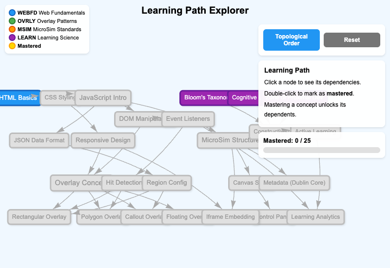
Interactive vis-network explorer for discovering learning paths through the knowledge graph.
-
Interactive force-directed viewer for exploring the course learning graph with search, category filtering, pan/zoom, and live statistics.
-
Visual guide to the spectrum of interactivity in educational content, from static images through fully adaptive simulations.
-
Leverage Point and Unintended Consequence Explorer
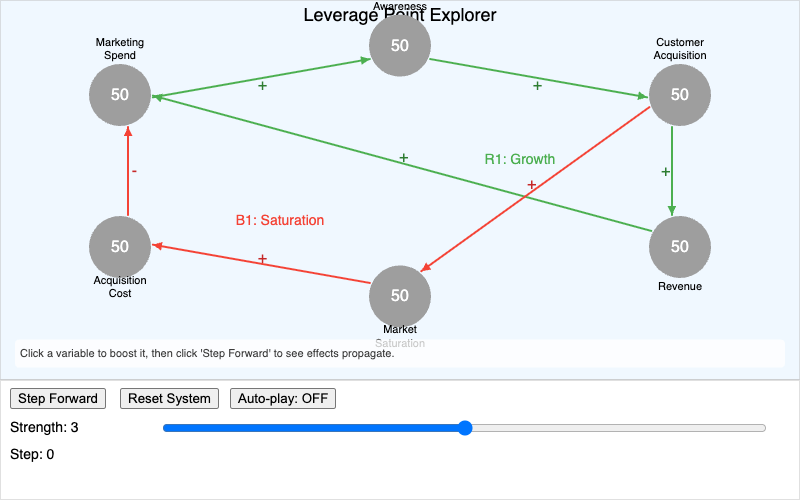
Interactive exploration of system leverage points and their potential unintended consequences.
-
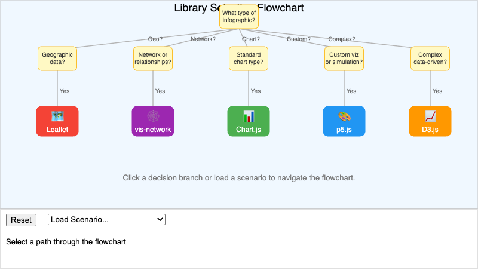
Interactive flowchart for selecting the right JavaScript visualization library for a given MicroSim.
-
Mayer's Principles Interactive Comparison
Apply Mayer's signaling, segmenting, and spatial contiguity principles by toggling each on and off in a sample infographic.
-
MicroSim Architecture Overview
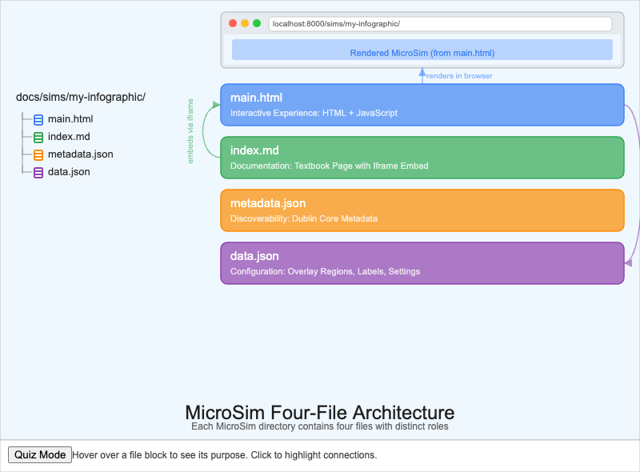
Interactive diagram showing the four-file MicroSim directory structure and how each file serves a distinct role.
-
MicroSim Directory Structure Explorer
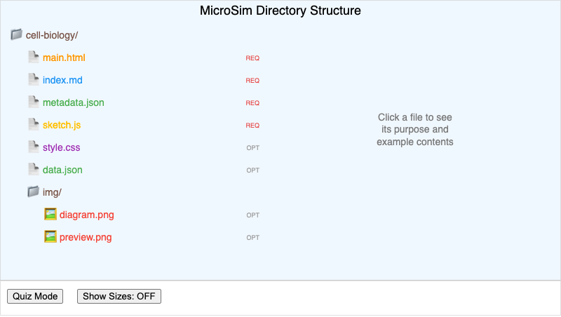
Interactive explorer of the standard MicroSim directory structure and file organization.
-
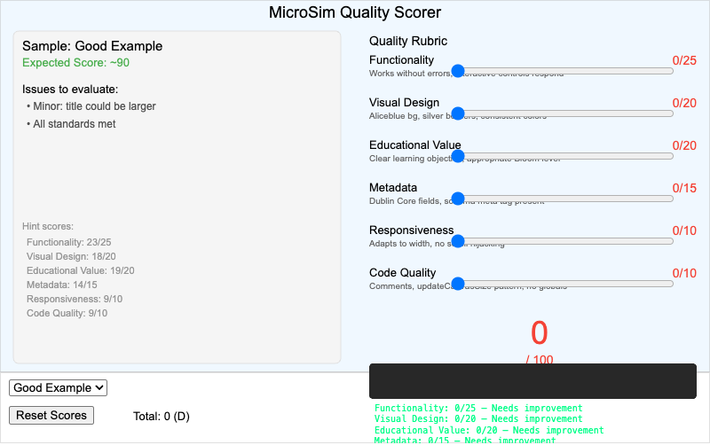
Interactive quality scoring tool for evaluating MicroSims against standardized criteria.
-
MicroSim Uniqueness Interactive Venn Diagram
An interactive three-circle Venn diagram demonstrating what makes MicroSims unique at the intersection of Simplicity, Accessibility, and AI Generation.
-
MicroSim Visual Standards Explorer
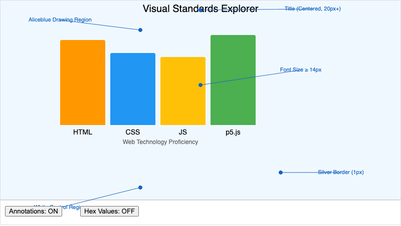
Interactive explorer of visual design standards for consistent MicroSim presentation.
-
Multi-Dimensional Classification Explorer
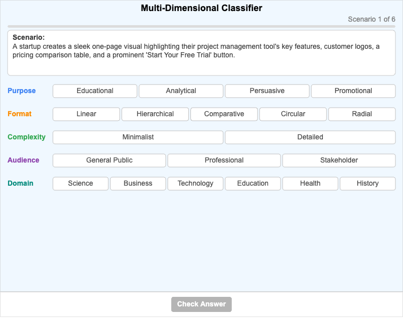
Interactive quiz where learners apply the five-dimension interactive infographic taxonomy to classify real-world infographic descriptions.
-
Assess which overlay type is most appropriate for a given image by viewing the same diagram rendered with all four overlay types side-by-side.
-
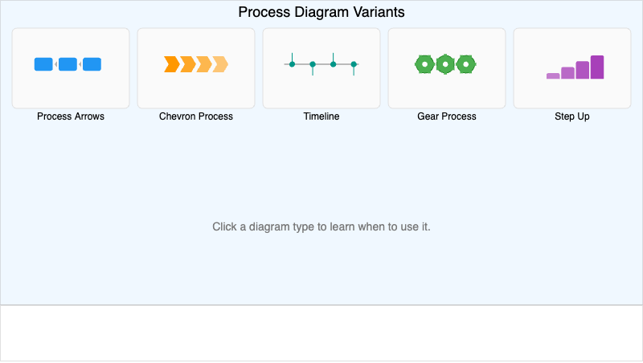
Interactive comparison of different process diagram formats and their communication strengths.
-
Prokaryote vs. Eukaryote Cell Comparison
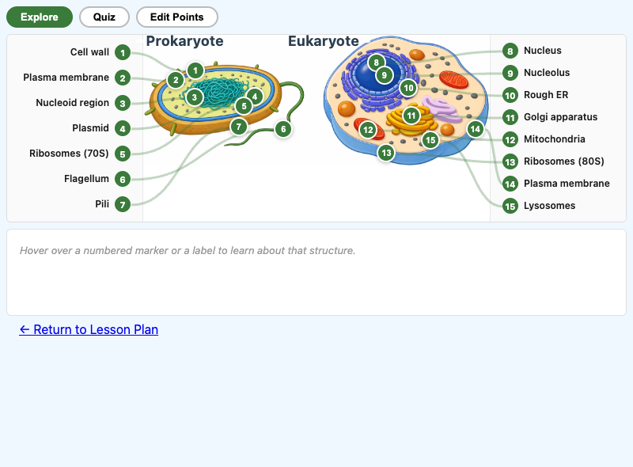
Interactive diagram comparing prokaryotic and eukaryotic cell structures with labeled callouts, explore and quiz modes, and AP Biology exam tips.
-
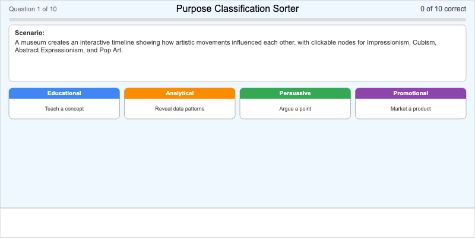
Interactive classification quiz where learners sort infographic descriptions into four purpose categories with immediate feedback.
-
Radial Cycle: Continuous Improvement
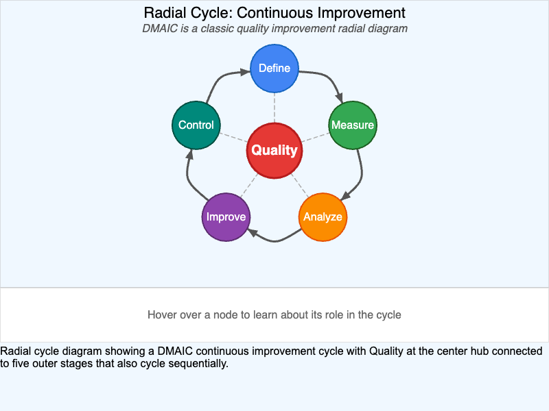
Radial cycle diagram showing the DMAIC continuous improvement cycle with Quality as the central hub driving five sequential stages.
-
Reinforcing vs Balancing Loop Simulator
Compare the dynamic behavior of reinforcing and balancing feedback loops by adjusting initial conditions and observing system behavior over time.
-
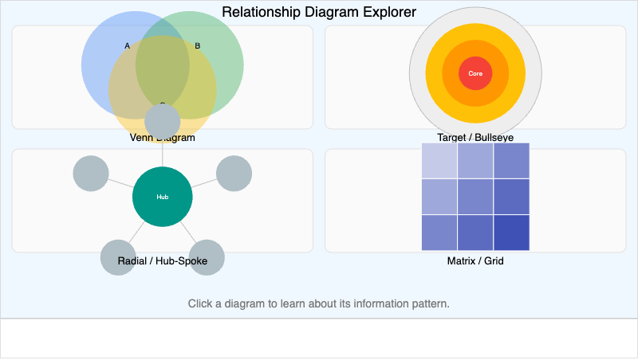
Interactive explorer of different relationship diagram types and their visual representations.
-
Demonstrate how an infographic layout adapts to different viewport widths using breakpoints for mobile, tablet, and desktop.
-
School District Infographic Adoption CLD
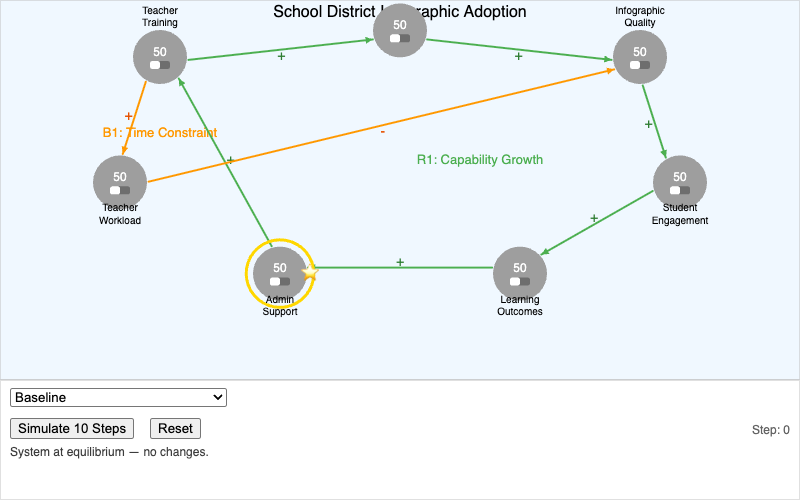
Interactive causal loop diagram modeling the dynamics of infographic adoption in a school district.
-
Six Frameworks Interactive Gallery
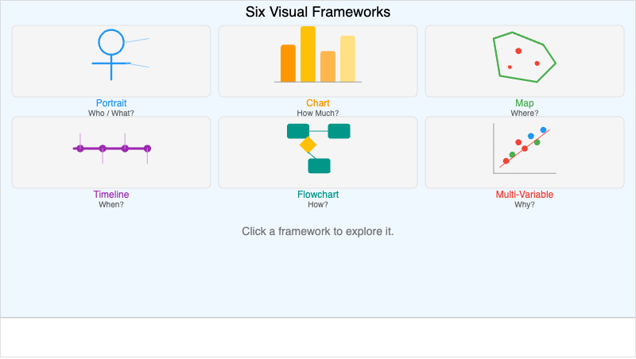
Interactive gallery exploring six foundational frameworks for visual communication and infographic design.
-
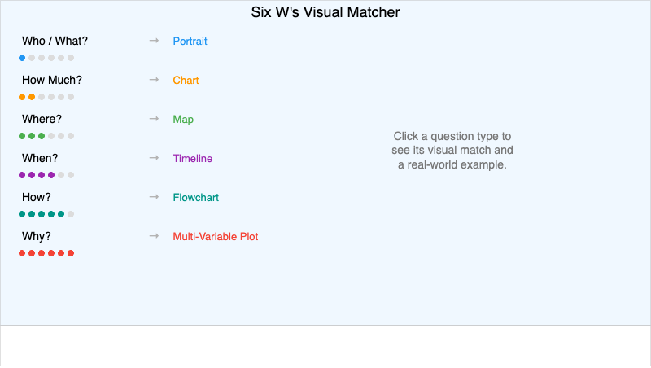
Interactive matching exercise connecting the six W's of infographic planning to their visual representations.
-
Identify the eight SmartArt categories by their visual thumbnail and name, building recognition of the standard diagram vocabulary.
-
SmartArt Category Matching Quiz
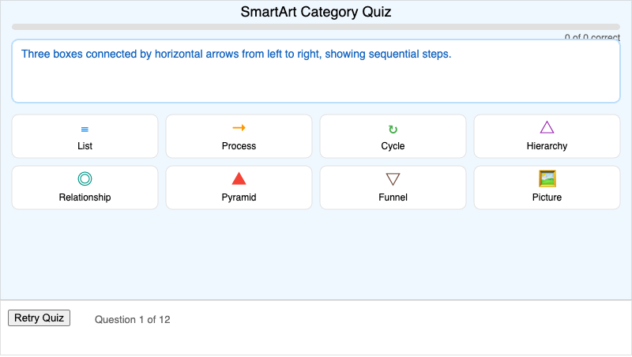
Interactive quiz for matching SmartArt categories to their appropriate use cases.
-
Apply the SQVID framework by adjusting five style sliders and observing how the combination produces different visual styles.
-
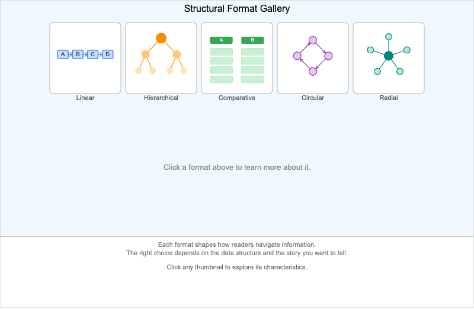
Interactive gallery comparing five structural formats for interactive infographics — linear, hierarchical, comparative, circular, and radial.
-
Type 1 Rectangular Overlay Demo
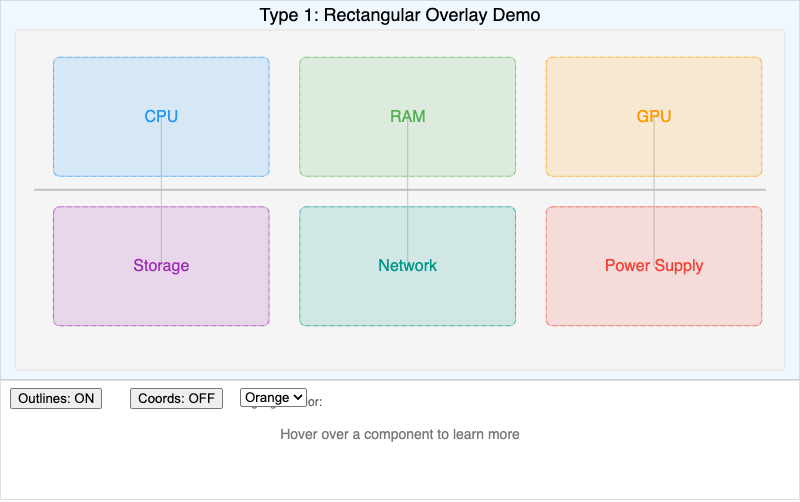
Interactive demonstration of rectangular overlay regions with hover callouts and click interactions.
-
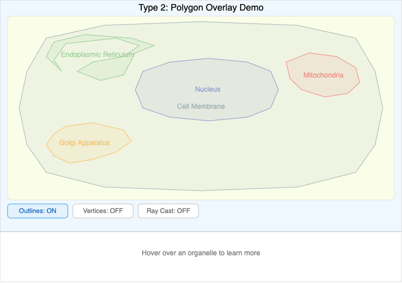
Interactive demonstration of polygon-shaped overlay regions for complex image annotations.
-
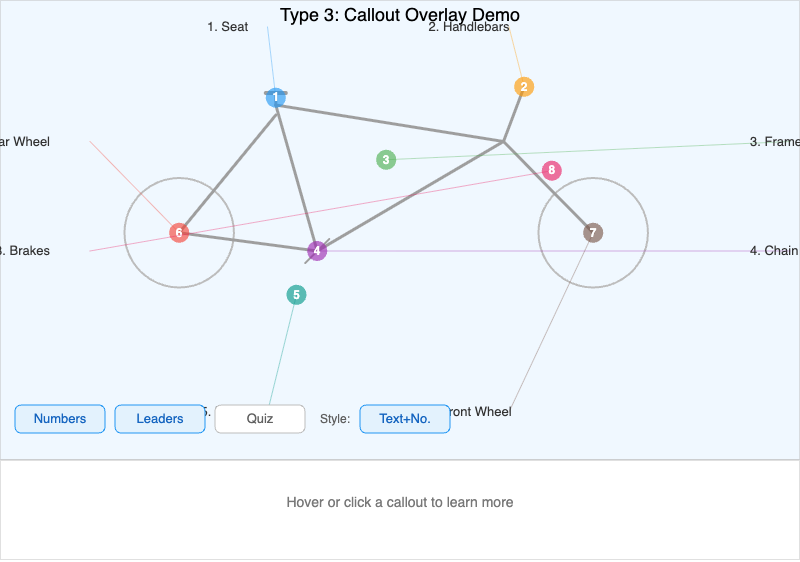
Interactive demonstration of callout lines connecting labels to specific diagram features.
-
Type 4 Floating Label with Edit Mode Demo
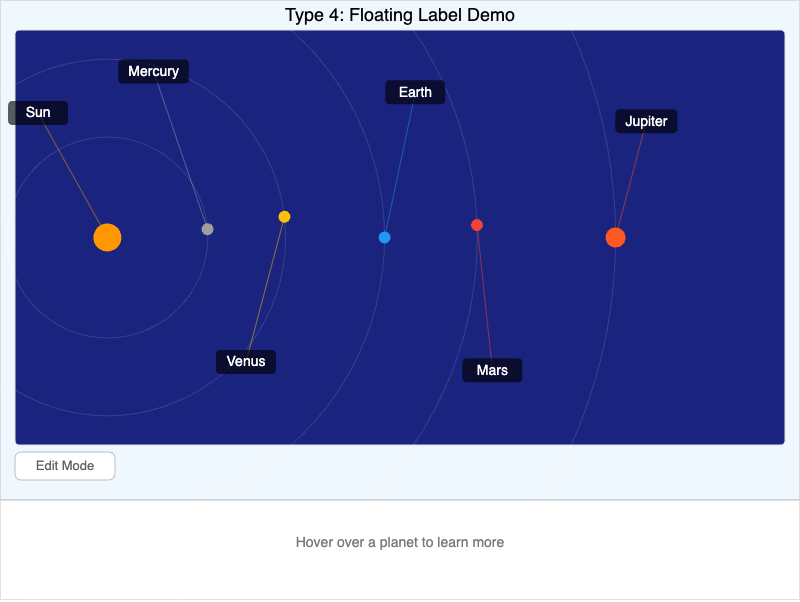
Interactive demonstration of floating labels with an edit mode for repositioning annotations.
-
Virtuous and Vicious Cycle Examples
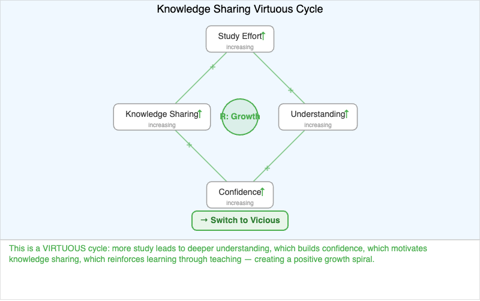
Interactive examples of virtuous and vicious feedback cycles in real-world systems.
-
Visual Encoding Channel Explorer
Compare the effectiveness of different visual encoding channels (position, length, color, size, shape, angle) by viewing the same dataset rendered through each channel.
-
Visual Framework Matching Quiz
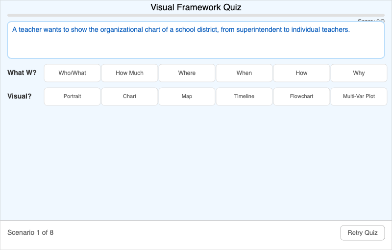
Interactive quiz for matching visual frameworks to their definitions and use cases.
-
Web Fundamentals Architecture Overview
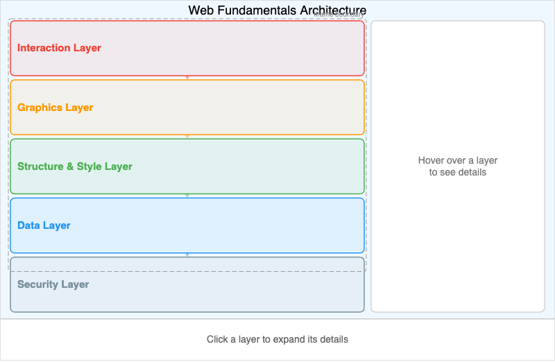
Interactive overview of the HTML/CSS/JavaScript architecture that powers MicroSims in the browser.